|
Knowledge and Love of God
|
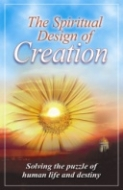
|
The
Spiritual
Design of Creation, 217 pages
This book is written to refresh the life of the soul. Its prime
purpose is to advance
the "knowledge of God," so that we may know our Creator as He
really is, not as
we may wish Him to be!
A poet once said: "God is closer to me than I am to myself. Why,
then, am I so far
from Him?" How can this be possible? The distance between our
spirit and the Spirit
of God can be measured by the difference between God as He
really is, and the God
that we have created in our mind. The purpose of acquiring the
"knowledge of God"
is to diminish the distance. The more we know God as He really
is, the closer we
draw to Him.
Our purpose in coming to this world is spiritual transformation,
which can be attained
only by knowing and loving God. The Spiritual Design of
Creation will help
you attain this Most Glorious Purpose. It appeals both to the
mind and to the heart.
It satisfies the mind by presenting the latest scientific
evidence for the existence
of God and the afterlife. It inspires and transforms the heart
by showing the everlasting
honors and rewards in store for those who cultivate their
spiritual potential and
the unimaginable losses for those who fail in this endeavor.
|
|
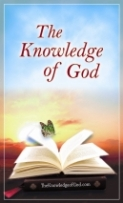
|
The
Knowledge of God,
73 pages
This small book rests on this premise: We are spiritual beings
created and designed
in the most splendid Image, for a profound purpose-to grow and
advance spiritually
by remaining in touch with our Designer. Our welfare and our
destiny depend on harmonizing
our life with what He has planned and has in store for us.
Unless we accept and
submit to His plan, we cannot manifest our full potential, nor
can we enjoy the
blessings in store for us. Instead of blooming into a beautiful
flower, we will
live and die as a seed, without fulfilling our mission-the very
reason we came into
this world.
|
|
For Atheists and Agnostics
|
|
|
Who
Needs Religion?, 120 pages
What is the heart and soul of religion? It is the practice of
the spiritual laws that bring humans
into harmony with God. It is an "everlasting dialogue between
humanity and God." It is the "voice
of the deepest human experience." What are the most precious
words in human life?
Love, joy, happiness, peace, contentment, and hope. Religion is
the abundant source of all
these blessings and more.
Faith is more than believing
In a well-ordered life;
It is more than victory
Over sin and strife.
Faith is more than planting
Seed beneath the sod;
Faith is daily walking
Hand in hand with God.
|
Proofs
|
|
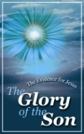
|
The Evidence for
Jesus, 91 pages
It is absolutely essential to know why we believe in Jesus.
Where can we find the
answer? Only in the Words of Jesus Himself. The Evidence for
Jesus offers
a brief summary of all the reasons Jesus-not His followers-gave
to substantiate
His claim. This is a book that every Christian should read. It
will also be of great
value to those of the Jewish faith who have a desire to know the
evidence for their
glorious King and Redeemer: Jesus Christ.
|

|
Muhammad:
The Spirit Who Glorified Jesus, 618 pages
This book demonstrates absolute harmony between the Bible and
the Qur’án. Conflict results from misunderstanding and
misinterpretation
of the Bible and the Qur’án.
Much of the conflict between religions result from
misunderstanding and misinterpreting the sacred Scriptures.
Bahá’u’lláh and the Báb have revealed the mysteries of the
Scriptures and demonstrated their absolute harmony.
|
|
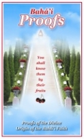
|
Bahá'í Proofs,
114 pages
The One who has sent Messengers to us has also given us clear
and definitive standards
by which they can be recognized. This book applies those
standards to Bahá'u'lláh
and proves that He has fulfilled every one of them on a scale
never seen before.
|
|
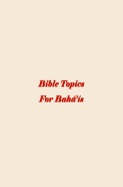
|
Bible
Topics for Bahá'ís,
102 pages
When we talk to Christians, we need to find the biblical verses
relevant to
the discussion. This compilation
is designed to help you find those verses. Read all the
quotations once, and
mark the ones that meet your
needs. You will then be better prepared to find the desired
verses.
|
For Christians and Jews
|
|
|
One Way
Is Christ
the Only Way?, 47 pages
Though called by many and different names and revealed in
diverse forms,
there has
been, and there will always be, only one divine and indivisible
faith
inspired and
sustained by the same transcendent spirit. Religions can be
likened to the
chapters
of an ever-growing anthology written periodically and
progressively by
seemingly
different writers, who in essence are one. It is not too
difficult to
recognize
the close and unbreakable links between the various chapters of
the one
ever-expanding
Book. Only the ink, the paper, and the pen seem to have changed,
not the
Author
or the Hand inscribing the words.
|
|
|
I Shall
Come Like a Thief, 109 pages
I Shall Come Like a Thief proves that God has fulfilled
His promise,
that the Second Advent of Jesus has indeed come to pass. Just as
it happened
in His first Advent, only those who seek Him can find Him and
recognize
Him. This small book presents a great challenge to all
Christians!
|
|
|
Will
Jesus
Come from the Sky or as a Thief ?, 207 pages
Be always on the watch! (Luke 21:36)
The day of the Lord will come like a thief in the night. (I
Thess. 5:2)
In the mid-19th century many Christian scholars had discovered
that,
according to
numerous biblical prophecies and promises, Christ would return
in 1844.
Thousands
of Christians around the world expected His Return in that year.
Why did so
many
discover the same date? And what piece of "the prophetic puzzle"
did they
miss?
Let us explore this critical question.
Jesus declared that He would return "like a thief." He
also
repeatedly warned
us to "Watch!" How does a thief come? Secretly. A thief
does not want
to
draw attention to himself. This is his foremost concern. How can
we catch a
thief?
By being awake and "watchful," by "paying
attention" to his
coming.
Jesus' warning that He would return "like a thief," and
His
recommended strategy
for recognizing Him by staying awake and by
"watching" for
Him, are
complementary:
The warning: I shall come like a thief!
The way to recognize me: Watch, pay close attention! Do not
be
complacent!
What, then, did Jesus mean by warning us repeatedly and
emphatically to
"Watch!"?
He meant: "Pay close attention to the news of My coming!"
|
|
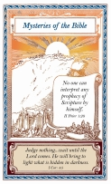
|
Mysteries of the
Bible, 39 pages
Who knows the true meaning of prophecies? There are at least
seven
conflicting schools of interpretation. Which one is right?
Mysteries
of the Bible shows how theologians distort the
meaning of
prophecies of the Second Advent to make them fit their personal
views and
expectations just as they did at the time of the First Advent.
|
|
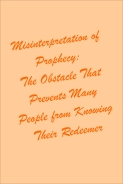
|
Misinterpretation of
Prophecy:
The Obstacle that Prevents Many People from Knowing Their
Redeemer, 33
pages
Prophecies are like sign posts; they are given to guide us
to our
destiny, to help us recognize our Redeemer. But many
believers,
throughout all ages, have used them for an opposite
purpose.
They have turned them into obstacles to deny their
Redeemer. They
have acted like someone who thirsts for water, but uses water to
drown
himself!
|
|
|
Christ
Has Come!,
155 pages
Christ Has Come! is written especially for Christians who have
sincere love
for
Jesus Christ and a genuine desire to obey His commands that they
should
never become
complacent, but rather watch for the news of His return, and
pray constantly
to
become worthy of knowing Him (Luke 21:34-36). It invites them to
open their
hearts
to the One who is knocking:
Behold, I stand at the door and knock. If anyone hears my voice
and opens
the door
I will come in... Christ (Rev. 3:20)
Be ready...to let Him in the moment He arrives and knocks.
Christ (Luke
12:35-36)
Be always on the watch...that you may be able to stand before
the Son of
Man. Christ
(Luke 21:36 NIV)
This book invites all seekers and lovers of truth to learn about
a new
religion,
the Bahá'í Faith, and the astonishing evidence of
its divine
origin,
as presented by its Founder, Bahá'u'lláh, the
Glory of God.
|
|
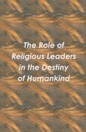
|
The
Role of
Religious Leaders in the Destiny of Humankind, 85 pages
Most believers trust their religious leaders and follow them
faithfully as
their guides to heaven and everlasting happiness, without being
aware of the
perilous consequences of this ancient and deeply entrenched
tradition.
The time has come for the followers of all faiths to question
this
unjustified and perilous practice. The time has come to examine
the divisive
role of these leaders, to see objectively what they are doing.
The time has
come to look more closely at who they are, how they have behaved
in the
past, and what strategies they use to keep their followers
divided and
uninformed.
|
|
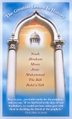
|
The
Greatest
Lesson in History, 35 pages
What is the most critical lesson we can learn not only from the
First Advent
of
Jesus but also from the story of all God’s great Teachers and
Redeemers?
That lesson
is hidden in these questions: Why do people deny their Redeemers
when they
have
only a few followers, and then welcome them when they have many
followers?
Why do
they first persecute their Prophets and Saviors, and centuries
later worship
them?
|
|
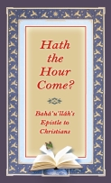
|
Hath
the Hour
Come?,
31 pages
Bahá’u’lláh wrote an Epistle—called The Most Holy Tablet—to
Christians. It
contains
His strongest and most urgent appeals to Christians to
investigate His Claim
as
the Return of Christ. Read this Epistle with your heart and
soul. Ponder its
meaning.
Allow your “spiritual instinct” to respond. Let your soul bask
in its
beauty, power,
and uniqueness. Try to remember if you have ever heard or seen
any human
being speak
in this language.
|
|
|
In the
Clouds of
Glory, 224 pages
This volume represents the fifth stage of our search into the
claim of the
twin Redeemers of our age: the Báb
and Bahá'u'lláh. Although it can and does serve as proof, its
chief function
is to remove the obstacles that
stand in the way of proofs, to disperse the clouds of
misconceptions that
obscure the light of truth.
Specifically, it seeks to decode the language of Scriptural
symbolism on the
return of Jesus, to demonstrate
how the symbolic words have always stood as obstacles in the
path of the
search for Truth, depriving the
masses of mankind from recognizing the Divine Messengers.
|
|
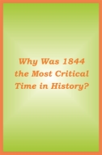
|
Why
Was 1844 the
Most Critical Time in History?, 28 pages
This booklet shows why 1844 was the most momentous date in the
history of
humankind.
|
|
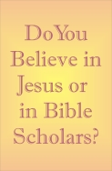
|
Do You
Believe in
Jesus
or in Bible Scholars,
75 pages
This booklet presents the instructions Jesus gave Christians to
help them
recognize Him on
His Return. It further demonstrates how Bible scholars distort
and conceal
the true meaning
of these instructions.
|
|
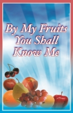
|
By My
Fruits You Shall
Know Me, 252 pages
Should religion be acknowledged merely on faith? Is religion
simply an
outpouring of human emotions and detached from reason? There are
many who
believe so, but such a belief is merely a supposition, solely an
assumption.
For the divine Educators teach otherwise; they ask us to search
and to test
every claim in the crucible of reason.
Every seeker of truth needs to know why he believes in his own
Faith, his
own Savior. Once this is accomplished, the task of seeking and
finding the
truth becomes quite simple. All that the seeker needs to do is
to apply the
conditions or requirements that hold true in relation to his own
Faith and
Savior, to the new Faith and the new Savior. If they apply, he
accepts; if
not, he rejects.
By My Fruits You Shall Know Me will guide you through the
path of the
search for truth.
|
|
|
A New Name
Everyone
Should Know, 60 pages
The deep attachments prevent most people from recognizing and
acknowledging
Bahá’u’lláh immediately. As a rule, it
takes several
years, sometimes decades, to overcome one’s lifelong
attachments. God is
full of grace and patience. He allows us to take our time. If it
were not
for His sustained patience and grace, no one would have a
chance.
No wonder Jesus promised the most splendid rewards to anyone who
“overcomes.” Overcomes what? Emotional attachments
and the many
other obstacles.
|
|
|
Bahá’u’lláh’s
Epistle to Christians, 16 pages
Bahá’u’lláh wrote an Epistle containing
His strongest
and most urgent appeals to Christians to investigate His claim.
This booklet
contains most of Bahá’u’lláh’s
Epistle—called
The Most Holy Tablet—along with biblical references offered by
the present
author in the footnotes. You may wish to read the Epistle twice,
once
without looking at the footnotes and again with the footnotes.
|
|
Letters to
Christians
|
Letters to
Christians,
21 pages
Christians are sound asleep! The best way to awaken them is to
send them
powerful and motivational letters.
You will find several samples of such letters here. Email them
to your
Christian relatives and friends.
|
Introduction to the Bahá’í Faith
|
|
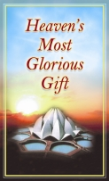
|
Heaven's
Most
Glorious Gift, 149 pages
This is the second in a two-volume series about the Bahá’í
Faith. This
volume, like
the first—One God, Many Faiths; One Garden, Many Flowers—
presents the
Message and
Mission of Bahá’u’lláh to all seekers and lovers of truth.
It invites
everyone who
is interested in his or her eternal destiny to “Watch!”
(Matt. 24:42),
to take notice
and pay attention to the greatest and most joyous news in
human history.
It invites
everyone to reach out for the most glorious gift Heaven may
bestow on
humans: the
gift of loving God and living in the paradise of His peace
and
knowledge.
Either we choose our destiny or leave it to the winds of chance.
“Whoever
has resigned
himself to fate will find that fate accepts his resignation.”
|
For Muslims
|
|
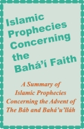
|
Islamic
Prophecies, 32 pages
This small book presents many prophecies from the Islamic
traditions and
a few prophecies from
the Qur’án concerning the Advent of the Báb
and
Bahá’u’lláh.
|
|
|
Bahá’u’lláh in the
Qur’án, 936
pages (in Persian language)
The Qur’án predicts some of the most
significant
historic events in the Bahá’í Faith, but
they are mostly
in coded language. The Báb and
Bahá’u’lláh
have broken those codes. You will be amazed, the details
with which the
Qur’án points to the advent of The Báb and
Bahá’u’lláh and the
Bahá’í
history. Bahá’u’lláh in the
Qur’án is the first book of its
kind, for it
is based almost entirely on the Quranic prophecies, rather
than the
Hadith (tradition).
|
For Bahá’ís and “Seekers”
|
|
|
Knowing
God by His
Word, 148 pages
Can we tell the difference between God’s thoughts and our
thoughts? Can
we also
tell the difference between the way God expresses His
thoughts and the
way we do?
Surely there must be distinct differences. This book
describes these
differences.
It demonstrates that God’s thoughts and the way He speaks
are so
distinct that they
can be readily recognized by any thoughtful person—anyone
who uses his
mind—his
ability to think, to reason, and to understand—to recognize
his Creator.
|
|
|
Thy
Kingdom
Come, 45 pages
We find two forces at work in the world: light and darkness.
All around
us we see
war, poverty, addiction, suicide, social isolation, apathy,
emptiness,
prejudice,
and injustice—waves of turmoil, conflict, and disorder that
strain our
powers to
the limit, that threaten increasingly not only our
civilization but our
very survival.
But we need not despair. For amidst all these forces of
darkness, there
stands a
beacon of light and hope—a new world-embracing Order that is
transforming the lives
of millions—that is giving birth to a new society and “a new
race of
man.” Although
not discernible by the masses of humanity, it is constantly
at work,
growing and
expanding at an ever-increasing pace. What is this Order?
Where and how
did it originate?
It is the purpose of this book to offer an outline of its
basic
elements, a brief
sketch of its strength, which is steadily rising with the
fall of a
crumbling and
chaotic old order—one that places self-interest above the
welfare of the
human race.
|
|
|
Bible
Topics for Bahá’ís, 102 pages
When we talk to Christians, we need to find the biblical
verses relevant
to the discussion. This compilation is designed to
help you find those verses. Read all the quotations once,
and mark the
ones that meet your needs. You will then be better prepared
to find the desired verses.
|
|
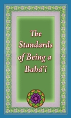
|
The
Standards of
Being a Bahá’í, 41 pages
What ethical principles guide Bahá’ís in
their daily
living? In an age when cults
sprout and spread like weeds everywhere, people remain
skeptical of
anything new.
They feel more comfortable with an established name, with
the tried and
true. And
we cannot blame them for their initial feelings.
Fortunately the skeptics can resolve their doubts by a
simple test:
judging a tree
by its fruits. This mini-book gives you a taste of what it
is like to be
a Bahá’í.
|
Motivational Topics
|
|
|
Seize
Thy
Chance, 48 pages
The purpose of this book is to show that:
- We are the captain of our soul. We have absolute freedom
to choose
our eternal spiritual
destiny.
- We came to this world to learn what God has planned for
us and to
pursue that plan.
- The consequences of either ignoring or pursuing that
plan are
enormous.
- It is of supreme significance to "seize the moment" to
learn about
that plan and
to choose our eternal spiritual destiny before our
moments are all
gone.
- What we think and talk about has the potential to turn
into reality
and transform
our life.
|
|
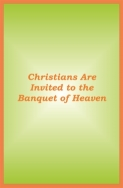
|
Christians are
Invited to the
Banquet of Heaven, 31 pages
Most people have lost their confidence, both in themselves and
in those who
lead
them. They live as if the key to the Banquet of Heaven has been
lost and no
one
can find it. This small book may not give you the key, but at
least it will
help
you look where you may find it.
|
|
|
Does Your Fish
Bowl Need
Fresh Water? 31
pages
Most people have lost their confidence, both in themselves and
in those who
lead
them. They live as if the key to the Banquet of Heaven has been
lost and no
one
can find it. This small book may not give you the key, but at
least it will
help
you look where you may find it.
|
|
|
If This is a New
Day, Why
Are People
Sleeping? 23 pages
Many people feel despondent. Like the small “weed” in the shade,
they see
little
if any lasting hope and purpose in their lives. They live in the
bare winter
of
gloom and despair; they shiver in the cold of unawareness,
apathy, and
silence.
Their only goal is survival, their only dream and glory is to
meet the
demands of
the day. They are unaware that the long-awaited spring has
dawned with
awesome splendor. It
is bursting with a power that can transform every seed into
breathless
beauty, every “weed”
into exquisite fragrance.
Let the heavens rejoice, let the earth be glad; let the
sea resound,
and all that is
in it; let the fields be jubilant, and everything in
them...for he
comes... (Psalms
96:11-13 NIV)
Verily this is the Day in which both land and sea
rejoice…
(Bahá’u’lláh)
|
|
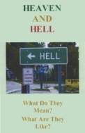
|
Heaven
and Hell:
What Do They
Mean?, 15 pages
Heaven or hell will be our everlasting home.
Should we not know our home in advance? Should we not know where
we would
like to spend
eternity?
Should we not be able to choose our permanent place of
residence?.
|
|
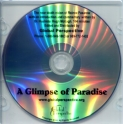
|
Near Death
Vision of Reinee
Pasarow, 15 pages
This is a summary of a talk by Reinee Pasarow concerning her
near death
vision. While
clinically dead, Reinee
was guided to investigate and recognize the divine origin of the
Bahá’í
Faith. Her story proves
that life after death continues. She was also given clues about
the future
of mankind on
this planet.
|
|
Selections for Memorial Meetings
|
Selections
for Memorial
Meetings 16 pages
13 selections from Sacred Scriptures on the afterlife and one
selection from
A Messenger
of Joy.
|
Other Topics
|
|
|
Do You
Really Know Who
You Are?,
38 pages
How do you see yourself? One of the facts declared throughout
the ages and
confirmed
by modern psychologists is this: Our life is what our thoughts
make it. Our
dreams
shape our destiny. What our minds perceive, our hands pursue.
Glory gives
herself
to those who always dream of her.
|
|
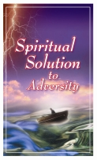
|
Spiritual
Solution to
Adversity, 56 pages
The prime purpose of this book is to show that the panacea for
human
suffering is
the adoption of a spiritual perspective. As intended by our
Creator, this
perspective
must serve as the first and foremost armor of protection for
human soul.
Without
this armor, we are vulnerable to the relentless changes and
chances of this
life;
we have little, if any, resistance to the mounting pains and
pressures of
daily
living. Our knowledge of God, our awareness of His ever-presence
in our
lives, and
His plan for our everlasting destiny is our soul’s immune
system. Without
this knowledge,
we are exposed to countless dangers of a changing world; we have
little if
any protection
against the unpleasant events of our life.
|
|
|
The
Four Valleys of
the Mind, 30
pages
Are you egg-minded, chicken-minded, eagle-minded, or
spiritual-minded? Read
this small book
to find out.
|
|
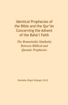
|
Identical
Prophecies
of the Bible and the Qur'án Concerning the Bahá'í Faith, 141
pages
A main solution to our divided and diseased world is unity among
the
followers of great
religions, especially the Jews,
Christians, and Muslims. This books helps the followers of these
religions
to recognize
their common bonds and their
single Source. It provides hundreds of examples from their
Scriptures to
show that they
predict, in identical terms, the
Advent of a great religion that will bring together and unite
all the
peoples of the world.
Bahá’ís believe that all the prophecies of the Bible and the
Qur’án have
been fulfilled by
the twin Messengers and
Redeemers of our time: the Báb (the Gate) who served as the
Herald of the
new Revelation
from God, and Bahá’u’lláh (the
Glory of God) who established the new Revelation, called
the Bahá’í
Faith.
I hope and pray that this book will pave the way for unity among
the
followers of these
three great religions, who
constitute about half the population of the earth.
|
|
|
A New
Prophet 16
pages
A few papers on vital topics written in the style of “The
Prophet” by
Khalil Gibran:
1. May Heaven Bless Your Wedding
2. What is Faith and Religion?
3. What is Religion?
4. Love is Never Lost
5. Love Speaks
6. Suffering
|
|
To Be Read
at Your Wedding
|
May Heaven
Bless Your
Wedding, 2 pages
|